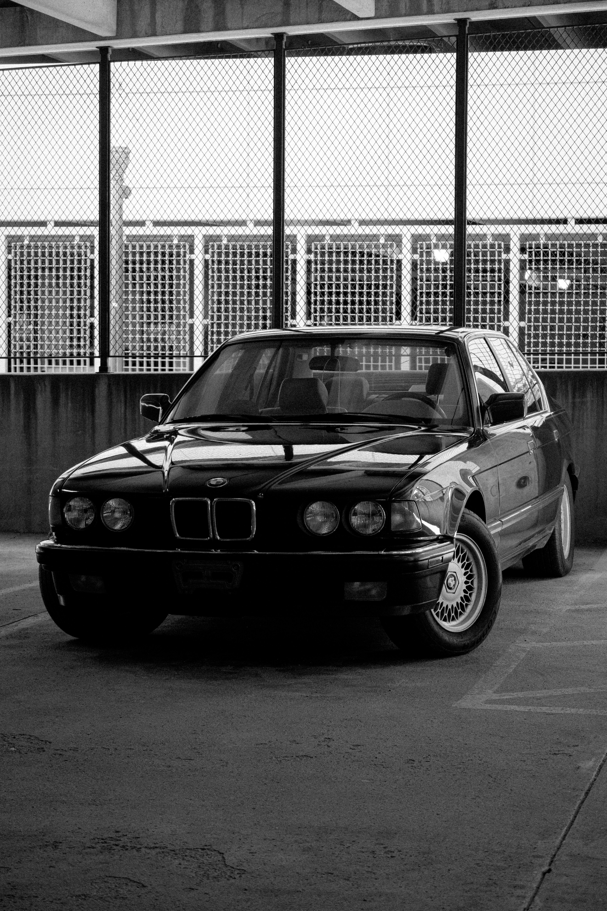
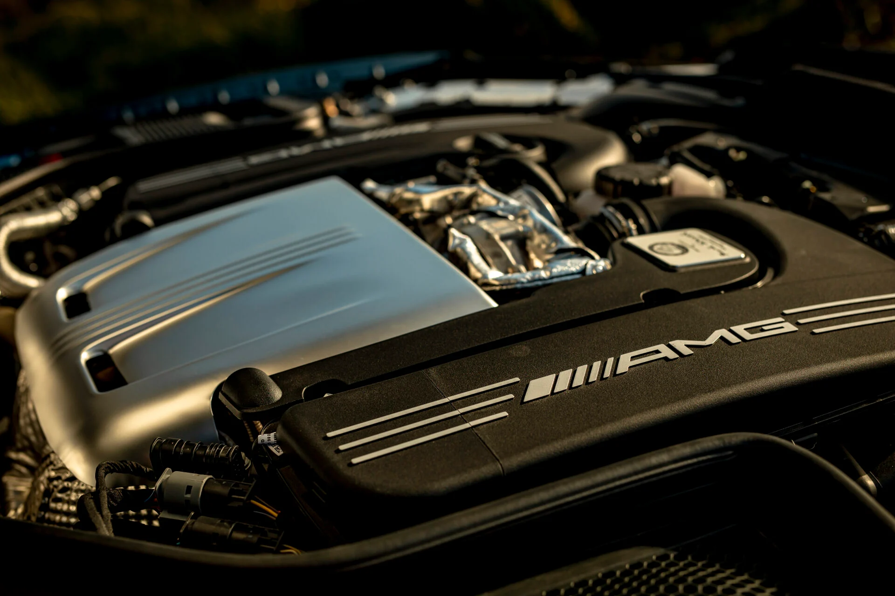

EuroSpec is defined by an obsession with mechanical perfection. We curate, source, and maintain the most significant European automobiles—from the latest high-performance releases to the iconic legends of the late 20th century.

01 // CURATION
We reject volume in favor of rigorous curation. Every vehicle in our inventory is selected based on performance, provenance, and engineering excellence. We act as curators for the most discerning enthusiasts.
02 // RESTORATION
Our technical facility operates under a strict mandate: preserve factory integrity. Whether preparing a new delivery or restoring a modern classic, we use original blueprints and period-correct materials to ensure every car meets factory tolerances.
03 // ENGAGEMENT
We celebrate the mechanical connection between driver and machine. Our focus remains resolute on vehicles that demand active engagement, bridging the gap between digital precision and raw performance.

EuroSpec views the automobile as kinetic sculpture. From the raw geometric styling of the 1980s to the advanced aerodynamics of today’s supercars, we represent the inflection points of industrial design.
Our facility in Geneva serves as a gallery for these industrial artifacts. We provide a stark, unadorned environment that forces focus solely onto the form and function of the vehicle itself. No distractions, no extraneous branding—only pure mechanical authority.